Sources and Price Zones¶
Renewable Source¶
{kind=link}
Renewable source model¶
{kind=link}
Renewable source model¶
For all renewable sources:
For renewables sources connected to AC nodes:
{kind=link}
Renewable source limits¶
{kind=link}
Renewable source limits¶
Class Reference: pyflow_acdc.Classes.RenSource
- class Ren_Source(name, node, PGi_ren_base, rs_type='Wind', S_base=100, installation_cost=0, Max_S_factor=1, np_rsgen=1)¶
Renewable generation source attached to a node.
Represents a (by default curtailable) renewable injection such as wind or solar, with its rated capacity, base/installation cost, and number of parallel units (
np_rsgen). Powers and limits are tracked in per-unit on the source’s ownS_base.- Parameters:
name (str) – Renewable-source identifier.
node (Node_AC or Node_DC) – Host bus (node name stored as
Node).PGi_ren_base (float) – Rated active power in pu on
S_base.rs_type (str, optional) – Technology label for plotting (e.g.
'Wind','solar').S_base (float, optional) – Per-unit power base in MVA.
installation_cost (float, optional) – Installation cost for TEP (stored as
base_costbeforelambda_capex).Max_S_factor (float, optional) – Multiplier for apparent-power rating (
Max_S = PGi_ren_base * Max_S_factor).np_rsgen (int, optional) – Number of parallel renewable units.
- PGi_ren¶
Available active power in pu (
PGi_ren_base * PRGi_available).- Type:
float
- PRGi_available¶
Availability factor in [0, 1].
- Type:
float
- gamma¶
Curtailment factor in [
min_gamma, 1].- Type:
float
- min_gamma¶
Minimum allowed curtailment factor.
- Type:
float
- curtailable¶
Whether the source may be curtailed in OPF.
- Type:
bool
- Qmin, Qmax
Reactive power limits in pu (AC-connected sources).
- Type:
float
- Max_S¶
Apparent-power rating in pu.
- Type:
float
{kind=link}
{kind=link}
{kind=link}
{kind=link}
Generator¶
{kind=link}
Generator model¶
{kind=link}
Generator model¶
{kind=link}
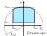
Generator limits¶
{kind=link}
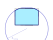
Generator limits¶
Class Reference: pyflow_acdc.Classes.Gen_AC
- class Gen_AC(name, node, Max_pow_gen, Min_pow_gen, Max_pow_genR, Min_pow_genR, quadratic_cost_factor=0, linear_cost_factor=0, fixed_cost=0, Pset=0, Qset=0, S_rated=None, gen_type='Other', installation_cost=0, S_base=100, np_gen=1)¶
AC generator connected to a bus.
- Parameters:
name (str) – Generator identifier.
node (Node_AC) – Host bus.
Max_pow_gen (float) – Maximum active power in pu on
S_base.Min_pow_gen (float) – Minimum active power in pu on
S_base.Max_pow_genR (float) – Maximum reactive power in pu on
S_base.Min_pow_genR (float) – Minimum reactive power in pu on
S_base.quadratic_cost_factor (float, optional) – Quadratic cost coefficient (stored as
qf).linear_cost_factor (float, optional) – Linear cost coefficient (stored as
lf).fixed_cost (float, optional) – Fixed cost coefficient (stored as
fc).Pset (float, optional) – Per-unit active setpoint for one parallel unit.
Qset (float, optional) – Per-unit reactive setpoint for one parallel unit.
S_rated (float, optional) – Apparent-power rating in pu (stored as
Max_S).gen_type (str, optional) – Fuel/technology label (e.g.
'natural gas','hydro').installation_cost (float, optional) – Installation cost for TEP (stored as
base_costbeforelambda_capex).S_base (float, optional) – Per-unit power base in MVA.
np_gen (int, optional) – Number of parallel generator units.
- PGen, QGen
Total dispatched active/reactive power (setpoint ×
np_gen; OPF result after solve).- Type:
float
- price_zone_link¶
If
True,lf/qftrack the host price zone.- Type:
bool
- is_ext_grid¶
External-grid (slack) generator flag.
- Type:
bool
Type |
Figure for folium plotting |
Default cost |
|---|---|---|
hydro |
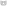 |
|
nuclear |
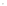 |
|
hard coal |
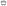 |
|
solid biomass |
||
geothermal |
||
lignite |
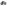 |
|
natural gas |
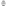 |
|
oil |
||
waste |
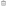 |
|
biogas |
||
ccgt |
||
diesel |
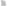 |
|
shunt reactor |
||
other |
{kind=link}
{kind=link}
{kind=link}
{kind=link}
{kind=link}
{kind=link}
{kind=link}
{kind=link}
{kind=link}
{kind=link}
{kind=link}
{kind=link}
{kind=link}
{kind=link}
Price Zone¶
{kind=link}
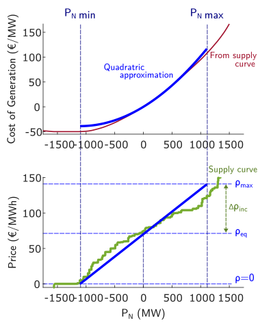
Price zone model¶
{kind=link}
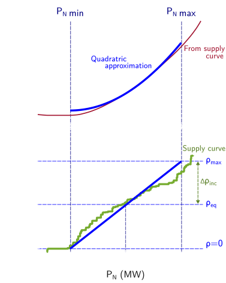
Price zone model¶
Price zone model is taken from [3]. The cost of generation quadratic curve is calculated in Market Coefficients Module.
Class Reference: pyflow_acdc.Classes.Price_Zone
- class Price_Zone(price=1, import_pu_L=1, export_pu_G=1, a=0, b=1, c=0, import_expand=0, curvature_factor=1, S_base=100, name=None, positive_price_delta=None)¶
Market price zone grouping AC nodes.
Holds a zonal price and demand-curve coefficients shared by its member nodes. Setting
pricepropagates to the zone’s nodes and their price-zone-linked generators, and to any linked MTDC/offshore price zones. Specialised subclasses model MTDC and offshore zones.- Parameters:
price (float, optional) – Zonal energy price.
import_pu_L (float, optional) – Per-unit import load limit.
export_pu_G (float, optional) – Per-unit export generation limit.
a (float, optional) – Base quadratic cost coefficient (stored as
a_base; effectiveamay differ).b (float, optional) – Linear cost-curve coefficient (see
Market_Coeff).c (float, optional) – Constant cost-curve coefficient.
import_expand (float, optional) – Import expansion offset in pu (used when
expand_importisTrue).curvature_factor (float, optional) – Scales
a_basewhen computing effectivea.S_base (float, optional) – Per-unit power base in MVA.
name (str, optional) – Price-zone identifier.
positive_price_delta (float, optional) – Maximum allowed price increase; caps
PGL_maxwhen set.
- nodes_AC, nodes_DC
Member AC and DC buses in the zone.
- Type:
list
- ConvACDC¶
AC/DC converters assigned to the zone.
- Type:
list
- PLi¶
Aggregated zone load in pu.
- Type:
float
- PLi_factor, PLi_inv_factor
Time-series and investment load scaling (propagate to linked nodes).
- Type:
float
- PGL_min, PGL_max
Minimum and maximum generation limits in pu.
- Type:
float
- PGL_min_base¶
Base lower generation limit before curve adjustments.
- Type:
float
- PN¶
Net active power at the zone.
- Type:
float
- expand_import¶
Import-expand mode flag (derives
aandPGL_minfromimport_expand).- Type:
bool
- linked_price_zone¶
Linked offshore or coupled price zone.
- Type:
Price_Zone, optional
- mtdc_price_zones¶
MTDC price zones notified when this zone’s price changes.
- Type:
list
References